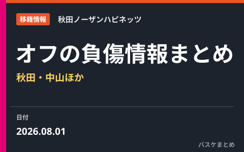

2026年オフの主な負傷情報まとめ 秋田・中山拓哉が左膝骨挫傷と発表

新シーズンの開幕に向けて各クラブが調整を進めるなか、選手の負傷に関する発表も続いています。8月1日には秋田ノーザンハピネッツが中山拓哉選手の負傷を公表しました。ここでは公式発表・報道で確認できた情報にしぼって、オフの主な負傷状況と、B.LEAGUEが選手の状態を公示する「インジュアリーリスト」の仕組みを整理します。選手の体調に関わる内容のため、確認できていない診断や復帰時期は記載していません。
オフの負傷情報の概要
シーズンオフは、けがからの回復に取り組む選手がいる一方で、練習や自主トレの過程で新たな負傷が報告されることもあります。B.LEAGUEでは、負傷した選手を各クラブが手続きにもとづいて公示する仕組みが整えられており、オフの時期にも登録・抹消の動きが確認できます。ここでは、報道や公式発表で名前と診断名がはっきり示されたケースにしぼって取り上げます。憶測にもとづく復帰時期の予想などは扱いません。
秋田・中山拓哉の左膝骨挫傷
秋田ノーザンハピネッツは8月1日、ガードの中山拓哉選手について「左膝骨挫傷」と発表しました。全治は未定とされており、現時点で具体的な復帰時期は示されていません。今後の練習参加や試合出場については、担当医やトレーナーと相談しながら慎重に判断していくとされています。あわせて、同選手が参加を予定していたイベントの欠席も発表されました。
中山選手は今オフに複数年契約を結んだばかりで、チームにとって欠かせない存在です。ファンとしては、まずは無理をせず、しっかりと状態を整えたうえでコートに戻ってくれることを願いたいところです。最新の状況は秋田ノーザンハピネッツの公式発表を確認するのが確実です。
「インジュアリーリスト」とは・確認方法
B.LEAGUEには、負傷した選手をクラブの申請にもとづいて公示する「インジュアリーリスト」という制度があります。リストには、公示日や登録日、所属クラブ、選手名、公示事由（負傷内容）などが記載されます。登録された選手は一定期間（30日間）は再登録ができず、その期日以降にクラブの抹消申請によって手続きが進む、という運用になっています。
このリストは、けがをした選手の登録状況を公式に確認できる情報源です。複数のリーグ区分にわたって多くの選手が登録されるため、気になる選手の状況を調べたいときの手がかりになります。掲載内容は随時更新されるので、最新の情報はB.LEAGUE公式の負傷者リストのページで直接ご確認ください。
Q. 選手のけがの詳しい容体はどこで分かる？
A. 診断名や状態は各クラブの公式発表が一次情報です。本サイトは公表された範囲を整理して紹介するもので、公表されていない診断や復帰時期は扱いません。
出典：バスケット・カウント／B.LEAGUE公式
https://basket-count.com/article/detail/269882
https://www.bleague.jp/news/injury.html